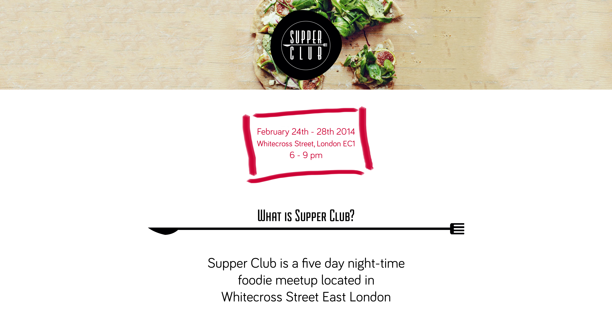
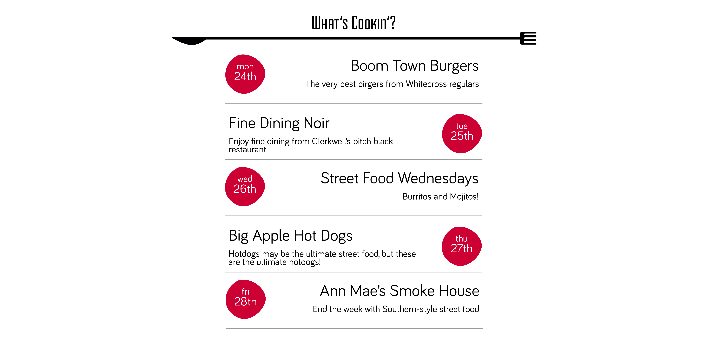
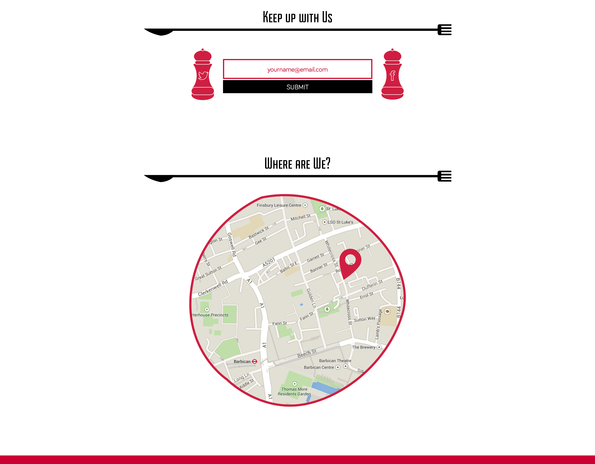

This was a design I did as a one day project during a web design course. The brief I was given was that “Supper Club” was a “five day night-time street food meetup” who was looking for a “one page site to advertise forthcoming Supper Club events”. The requirements for the website included: A Supper Club identity, the event duration and location details, a sign up form, and social links. I designed both the Supper Club logo and the one page website.
  